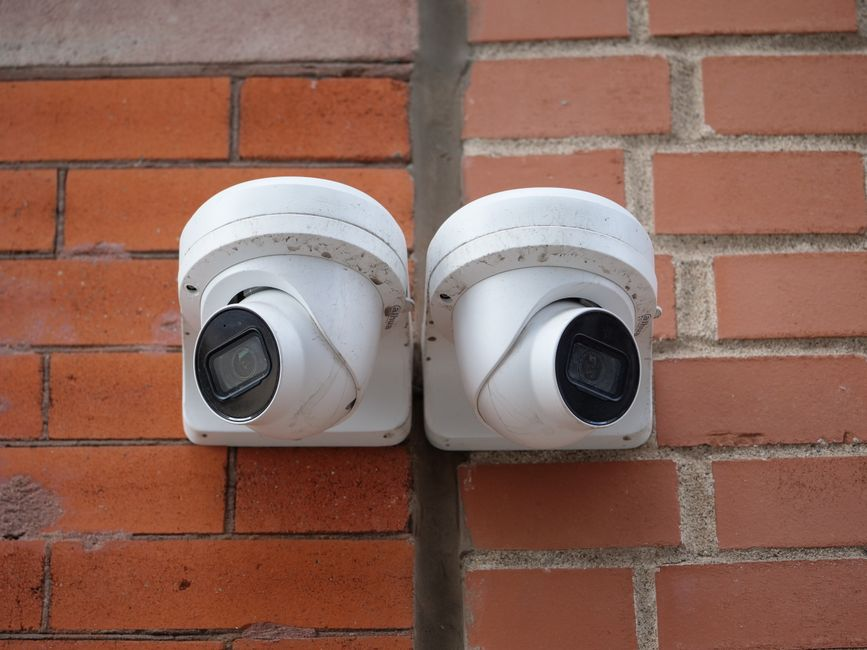
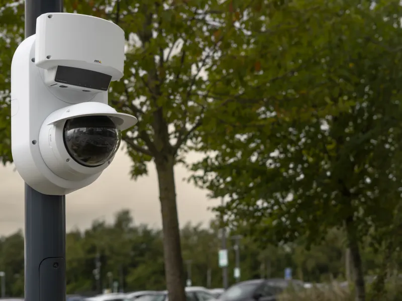

Cómo calcular el costo de un sistema de videovigilancia para su empresa

El costo de videovigilancia en una empresa se calcula según las áreas que deben cubrirse, las cámaras requeridas, el almacenamiento, la instalación y la integración con otros sistemas. Para TI, seguridad patrimonial, operaciones y compras, la pregunta útil no es solo cuánto cuesta cada cámara, sino qué solución cubre los riesgos y condiciones reales del sitio.
Una planta con patios, accesos vehiculares y turnos nocturnos necesita una configuración distinta a la de un edificio administrativo o un hospital. Por eso, un precio responsable parte de revisar el lugar, definir objetivos y precisar el alcance antes de comparar propuestas.
Puntos clave
El costo total depende del alcance técnico y operativo: compare propuestas por cobertura, almacenamiento, instalación e integración, no solo por cantidad de cámaras.
| Opción o caso | Cuándo conviene | Qué revisar |
|---|---|---|
| Sistema nuevo | Cuando no existe infraestructura aprovechable o se requiere cubrir áreas distintas. | El diseño debe considerar rutas de cableado, red, energía, montaje y almacenamiento. |
| Ampliación | Cuando el sistema actual funciona y hay zonas sin cobertura, como un patio o un nuevo almacén. | Confirme compatibilidad de cámaras, licencias, grabación y plataforma antes de sumar equipos. |
| Modernización | Cuando las cámaras o el almacenamiento ya no responden a las necesidades operativas. | Revise primero qué componentes sirven y cuáles limitan la calidad de imagen o la consulta de video. |
| Integración | Cuando se necesita asociar eventos de acceso con video para investigar incidentes. | Aclare qué puertas, lectores, cámaras y eventos se incluirán, además de quién administrará los permisos. |
¿Qué incluye el costo de videovigilancia en una empresa?

Del levantamiento al sistema en operación
Un proyecto de videovigilancia es el conjunto de decisiones de diseño, equipos, instalación y configuración que permite observar y consultar video en las áreas definidas. El precio no equivale a multiplicar el número de cámaras por el costo unitario: también incluye componentes y trabajo necesarios para que las imágenes lleguen a los puestos autorizados y se conserven el tiempo requerido.
El primer paso es un levantamiento de sitio. Se revisan accesos peatonales y vehiculares, perímetros, andenes, líneas de producción, almacenes, estacionamientos y puntos de atención. En una planta, por ejemplo, una cámara frente a un portón puede necesitar captar el ingreso de vehículos, mientras otra debe permitir identificar actividad en un pasillo de embarque. La ubicación y el objetivo cambian el tipo de equipo y su instalación.
Después se define la cobertura y se documenta qué debe verse. No es lo mismo observar movimiento general que reconocer detalles relevantes de una operación. La distancia, el ángulo, la iluminación, los contraluces y las condiciones ambientales influyen en la elección de cámara. Un equipo mal orientado puede registrar una puerta, pero dejar fuera el área donde se valida una entrega.
El diseño también determina la infraestructura. Puede contemplar cámaras, soportes, cableado, switches, energía, gabinetes, enlaces de red, grabación y licencias correspondientes al sistema seleccionado. Si algunas ubicaciones están lejos de los cuartos de comunicaciones o expuestas al clima y al polvo, la instalación demanda materiales y trabajo distintos a los de una oficina interior.
Grabación, consulta e integración
El almacenamiento se calcula con base en la cantidad de cámaras, la calidad de grabación, la actividad de cada escena y el periodo durante el que la empresa necesita conservar video. Si una investigación suele comenzar varios días después de un evento, una retención demasiado corta puede impedir recuperar la evidencia. Por eso, el requisito de conservación debe definirse antes de dimensionar el almacenamiento.
La propuesta debe precisar quién podrá ver las imágenes, desde dónde y con qué permisos. En proyectos con control de acceso, también se define si ciertos eventos, como el uso de una credencial en una puerta, se relacionarán con cámaras cercanas. Esa integración ayuda a revisar una secuencia de hechos, pero requiere especificar los accesos y eventos incluidos, además de configurar la plataforma y sus usuarios.
Por último, se contempla la instalación, configuración, pruebas y entrega. Una cotización clara describe el alcance por zonas, la infraestructura nueva y la existente que se reutiliza, los criterios de grabación y qué actividades de puesta en marcha se incluyen. Comparar únicamente el número de cámaras oculta diferencias que afectan el costo y el funcionamiento diario.
¿Qué determina el costo de videovigilancia y cómo se calcula?
Variables que cambian el alcance
Los precios de videovigilancia varían por condiciones concretas del proyecto, no por una tarifa única aplicable a cualquier empresa. Una propuesta para Tijuana, Mexicali, Tecate o Ensenada debe partir de las condiciones de la instalación y de las áreas a cubrir; la ciudad, por sí sola, no permite fijar un precio.
- Cantidad y ubicación de cámaras: cubrir un acceso, un pasillo y un patio exterior implica distintos ángulos, alturas y puntos de montaje.
- Infraestructura disponible: cableado, puertos de red, energía y espacio en gabinetes pueden estar listos, requerir ampliación o necesitar una instalación nueva.
- Condiciones del entorno: iluminación nocturna, exposición al exterior, vibración, polvo o cambios de temperatura condicionan el equipo y los accesorios.
- Almacenamiento requerido: más cámaras, mayor detalle o más días de retención requieren dimensionar con cuidado la capacidad de grabación.
- Integración y administración: conectar video con control de acceso, definir perfiles de usuario y ordenar la operación agrega trabajo de diseño y configuración.
- Continuidad de la operación: trabajar en áreas productivas, zonas clínicas o accesos activos exige coordinar horarios, permisos y medidas para no interferir con las actividades.
Un punto que suele cambiar la cotización es la diferencia entre reutilizar y reemplazar la infraestructura. Que exista cableado no confirma que sirva para el nuevo diseño; hay que revisar su estado, recorrido y compatibilidad. Lo mismo ocurre con cámaras ya instaladas: pueden ofrecer cobertura útil, pero no necesariamente cumplir el objetivo de imagen o integrarse con la plataforma elegida.
Los paquetes de videovigilancia pueden parecer sencillos de comparar, pero un paquete cerrado no necesariamente representa el alcance de una planta con varias naves, accesos o patios. Revise qué incluye: equipos, instalación, almacenamiento, licencias, configuración y pruebas. Si faltan estos datos, el precio inicial no permite comparar el costo total del proyecto.
Pro Tip: Antes de pedir propuestas, defina por cada zona si necesita observar actividad general o distinguir detalles para una revisión posterior. Esa diferencia orienta la selección de cámara y evita especificar equipos por cantidad sin un objetivo operativo.
Plazo y coordinación en instalaciones activas
El tiempo de implementación se relaciona con el número de zonas, la disponibilidad de rutas de cableado, los trabajos de montaje y la coordinación con las áreas responsables. En una planta que no puede detener producción, la instalación puede organizarse por sectores y ventanas de trabajo. En un hospital o una universidad, las rutas y horarios deben acordarse para no interferir con circulación, atención o actividades académicas.
También hay dependencias internas. TI suele validar conectividad y segmentación de red; seguridad patrimonial define qué eventos requieren revisión; mantenimiento e instalaciones coordinan accesos físicos, alturas y permisos de trabajo; compras necesita un alcance comparable. Cuando esas decisiones se toman después de adjudicar, aparecen cambios de alcance que afectan costo y plazo.
Lista de verificación antes de solicitar una cotización
Información que conviene reunir
Una cotización útil comienza con datos del sitio y una lista de objetivos. No necesita tener todo el diseño resuelto: sí debe explicar dónde está el problema, qué se requiere observar y qué restricciones de operación aplican. Esta lista ayuda a preparar una conversación técnica con proveedores y a que compras compare propuestas con el mismo alcance.
- Marque las áreas prioritarias: señale accesos, perímetros, embarques, almacenes, estacionamientos o puntos de atención que requieren cobertura, y explique qué incidente o necesidad operativa motiva cada zona.
- Describa la operación: indique turnos, horarios de mayor actividad, flujo de visitantes y vehículos, y cuándo se necesita consultar grabaciones.
- Reúna planos disponibles: comparta planos de planta, ubicación de cuartos de comunicaciones y rutas conocidas de cableado; anote las zonas donde no se permiten perforaciones o interrupciones.
- Documente el sistema existente: registre marcas o modelos disponibles, ubicación de cámaras y grabadores, estado aparente del cableado y quién administra el sistema. No dé por hecho que todo puede reutilizarse.
- Defina conservación y acceso: acuerde cuánto tiempo se requiere guardar video y qué perfiles podrán verlo, exportarlo o administrar usuarios. Incluya las áreas responsables de autorizar esos permisos.
- Aclare si necesita integración: identifique las puertas o eventos de control de acceso que deberían revisarse junto con video, como una entrada fuera de horario o una puerta forzada.
- Fije restricciones del sitio: detalle horarios de producción, procedimientos de acceso, requisitos de seguridad industrial y coordinación con mantenimiento o instalaciones.
- Pida alcances comparables: solicite que cada propuesta desglose zonas, equipos, instalación, grabación, licencias, configuración, pruebas y supuestos sobre infraestructura existente.
Pro Tip: En un plano, marque cada cámara propuesta con su objetivo y dirección aproximada de vista. Después verifique en sitio si estanterías, maquinaria, portones abiertos o cambios de luz bloquean ese encuadre.
Nuestra perspectiva sobre el presupuesto
En IAMET empezamos por entender qué necesita vigilar la empresa y qué accesos debe controlar. Esa definición ayuda a ordenar prioridades antes de hablar de cantidades de equipos. Una cámara instalada sin una función clara puede añadir costo y carga de administración sin resolver la necesidad que llevó a solicitar el proyecto.
Recomendamos separar el alcance por zonas y objetivos, por ejemplo, vigilancia de perímetro, operación de andenes o revisión de accesos. Así, TI puede evaluar la infraestructura y seguridad patrimonial puede validar la cobertura requerida. Operaciones, mantenimiento e instalaciones también pueden detectar restricciones de horario, montaje o tránsito antes de cerrar el diseño.
Evitaríamos elegir una propuesta solo por el menor precio total o por el mayor número de cámaras. La comparación debe incluir cómo se grabará, cuánto tiempo se conservará el video, qué infraestructura se reutiliza y cómo se administrarán usuarios. En plantas con áreas muy distintas, una solución uniforme para todos los espacios puede dejar puntos ciegos o especificar equipos que no responden a cada condición.
Para proyectos en Tijuana, Mexicali, Tecate y Ensenada, la evaluación se hace sobre el sitio concreto. El clima, la distribución, las rutas de cableado y la operación de cada instalación son parte del diseño; no se sustituyen con una lista genérica de precios. IAMET integra soluciones de seguridad electrónica con tecnología Genetec a partir de las necesidades definidas para cada proyecto.
Cuándo conviene involucrar a un especialista
Señales de que hace falta diseño técnico
Involucre a un especialista cuando el sistema cubrirá múltiples edificios o áreas exteriores, cuando la red existente tiene restricciones, cuando se necesita conservar video por un periodo definido o cuando la empresa requiere asociar eventos de control de acceso con imágenes. También es pertinente si va a sustituir equipos sin saber qué infraestructura o componentes pueden conservarse.
Para la primera conversación, prepare un plano, una lista de áreas prioritarias, horarios de operación, requisitos de retención y un inventario de equipos existentes. Incluya a TI, seguridad patrimonial y, según el sitio, operaciones, mantenimiento o instalaciones. Esa participación permite revisar tanto el diseño como las condiciones reales de implementación.
Un proveedor adecuado debe explicar qué objetivo cubre cada cámara, qué elementos forman parte del precio, qué supuestos hizo sobre la red y el cableado, y qué pruebas están contempladas. También debe señalar límites: por ejemplo, si una ubicación tiene obstrucciones o si reutilizar un componente requiere una revisión previa. Si la propuesta no distingue suministro, instalación e integración, solicite que aclare el alcance antes de comparar.
Preguntas frecuentes sobre el presupuesto
¿Existe un precio fijo por cámara para una empresa?
No hay un precio por cámara que describa por sí solo el costo de un proyecto empresarial. El montaje, el cableado, la distancia a la red, la iluminación, el almacenamiento y la configuración cambian de una ubicación a otra. Una cámara interior en un pasillo y otra instalada en un perímetro exterior no necesariamente requieren los mismos componentes ni el mismo trabajo.
Para comparar, revise el costo del sistema por alcance y zona, no solo el costo unitario del equipo.
¿Qué información necesito para conocer los precios de videovigilancia?
Prepare un plano o croquis, indique las áreas que desea cubrir y explique qué necesita observar en cada una. Añada datos sobre horarios, operación, almacenamiento requerido, infraestructura de red y cámaras existentes. Si no conoce algún detalle técnico, descríbalo como pendiente, pero distinga lo que ya está confirmado de lo que debe revisarse en sitio.
Con esa información, las propuestas pueden señalar sus supuestos y evitar que se comparen alcances distintos.
¿Un paquete de videovigilancia incluye instalación y almacenamiento?
El término “paquete” no garantiza que todos esos elementos estén incluidos. Algunas propuestas pueden detallar cámaras y montaje, mientras dejan aparte grabación, licencias, cableado, configuración o integración. Antes de aceptar un paquete, pida el desglose de equipos, mano de obra, infraestructura, almacenamiento, puesta en marcha y pruebas. En una planta, confirme también si el precio considera trabajos en altura, acceso a zonas restringidas o coordinación con horarios productivos.
¿Puedo conservar las cámaras y el cableado que ya tengo?
A veces es posible conservar parte de la instalación, pero hace falta verificar cada componente. Revise modelo, estado, ubicación, calidad de imagen necesaria y compatibilidad con el sistema que se propone. El cableado también debe evaluarse por su condición y recorrido; que una cámara transmita hoy no asegura que la infraestructura alcance para una ampliación. Un diagnóstico ayuda a separar lo reutilizable de lo que limita cobertura, grabación o administración.
¿Cuánto tiempo se tarda en implementar el sistema?
El plazo se define con el alcance y las condiciones de acceso al sitio. Influyen la cantidad de zonas, la disponibilidad de cableado y energía, los trabajos de montaje, la programación del sistema y las ventanas autorizadas por operaciones. En una instalación activa, dividir el trabajo por áreas puede facilitar la coordinación, pero el cronograma debe acordarse con quienes controlan producción, seguridad y mantenimiento.
Solicite que la propuesta describa las etapas y las dependencias que pueden mover las fechas.
¿La integración con control de acceso aumenta el costo?
La integración puede añadir diseño, configuración y pruebas, porque se deben definir qué puertas, eventos y cámaras se relacionan, además de los permisos de usuario. Su costo depende de ese alcance y de los componentes que ya existen. No siempre conviene integrarlo todo: puede ser más útil empezar por accesos críticos, como una entrada de almacén o un área restringida.
La propuesta debe indicar qué eventos se podrán revisar junto con video y qué queda fuera.
Cómo ayuda IAMET a definir el proyecto
En IAMET ayudamos a responsables de seguridad y TI a definir qué áreas necesitan vigilar y qué accesos deben controlar. A partir de esas necesidades, diseñamos e integramos soluciones de seguridad electrónica con tecnología Genetec para empresas y plantas industriales en Tijuana, Mexicali, Tecate y Ensenada. El alcance se orienta a los objetivos y condiciones de cada sitio, no a un paquete idéntico para todas las instalaciones.
Según el proyecto, el trabajo puede incluir:
- Diseño de sistemas de videovigilancia: definición de cobertura y componentes de acuerdo con las áreas y objetivos indicados.
- Instalación de sistemas de videovigilancia: montaje y puesta en marcha conforme al alcance acordado y a las condiciones del sitio.
- Integración de sistemas de videovigilancia: configuración del sistema para administrar y consultar video de acuerdo con los requisitos definidos.
- Integración de sistemas de control de acceso: incorporación de los accesos y eventos que el proyecto haya identificado como prioritarios.
Para solicitar una cotización, visite genetec.iamet.mx e indique qué áreas necesita vigilar y qué equipos tiene instalados.
El siguiente paso para estimar el presupuesto
El primer paso más útil es documentar en un plano las zonas que requieren cobertura y anotar qué necesita observar la empresa en cada una. Después, reúna la información disponible sobre cámaras, cableado, red, almacenamiento y horarios de trabajo. Ese material permite conversar sobre un alcance concreto, en vez de solicitar un precio basado únicamente en una cantidad preliminar de equipos.
Al comparar propuestas, confirme que describan las mismas áreas, el mismo objetivo de imagen y los mismos requisitos de conservación e integración. Si una diferencia de precio se debe a que una propuesta excluye instalación o almacenamiento, la comparación no es equivalente. Con un alcance definido, compras, TI, seguridad patrimonial y operaciones pueden revisar el costo de videovigilancia con criterios claros y tomar una decisión acorde con la instalación.
Este artículo se ha escrito con Rocketito.